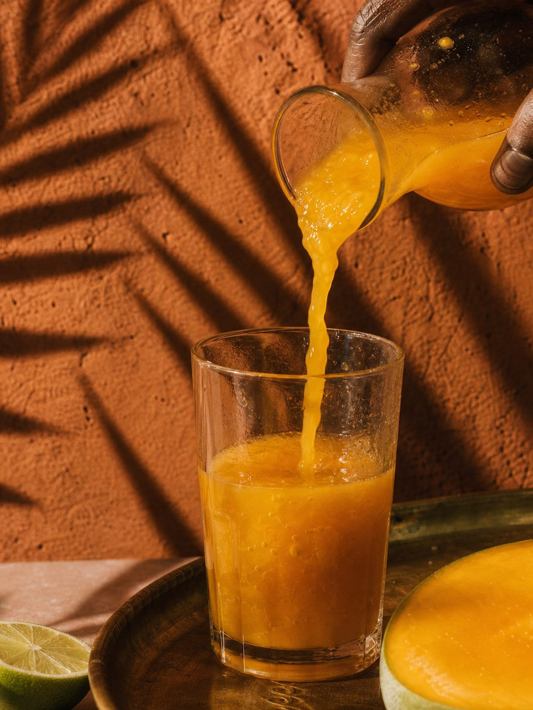
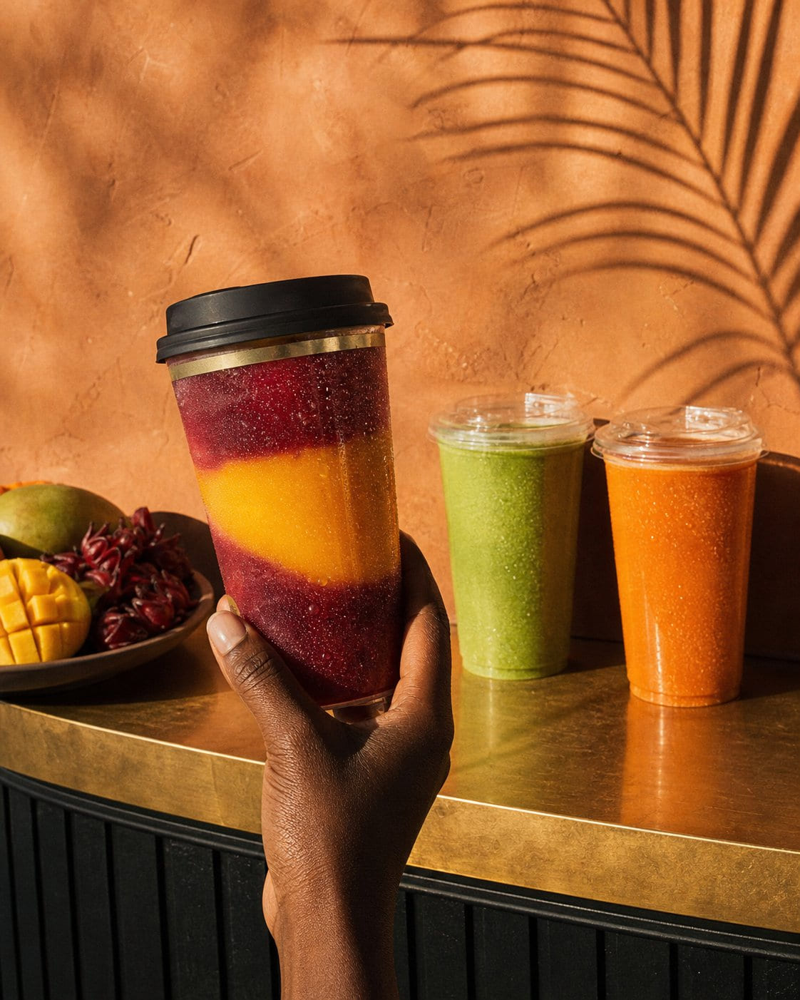

04 — The range
Threewaystotake it.
Bottled for the road, poured over ice at the counter, or layered in a Movie Box cup for the walk home.

Dar es Salaam·Tanzania
Est. the coast
Ladha ya kisasa.
Clean origin, modern taste — pressed the same morning, poured over a brass counter.
01 — The point

03 — The flavours
Roselle
Sour cherry-deep, steeped from dried calyces the same morning. Poured cold, never sweetened.
1,000
04 — The range
Bottled for the road, poured over ice at the counter, or layered in a Movie Box cup for the walk home.

01 The bottle
02 The Movie Box

03 The counter
Every day
What is ripe decides half the board. Tell the counter what you like and they will build it.
Read the menu“Cold, clean, and honest about where it came from.”
— the house line
05 — Visit
A juice point, not a café. Stand at the brass, watch it pressed, take it with you.
Concept redesign. Hours, phone and email are placeholders — no verified details were supplied by the business.